Project 60fps
Introduction
Hello and welcome to the Project 60fps page!
The frame rate is by far the biggest problem that players were complaining about.
The Android port of Sonic Advance is meant to run at 15fps.
Therefore, I made this project with the goal of making this game run at 60fps.
However, while this sounds simple, this task is actually too demanding to make it possible.
In this project page, you can find a Context section to better understand how the game works and the current progress of this project.
Next, the Remaining leftovers section is where you can take a look at the remaining flaws to fix and understand how to give some help to this project.
Also, if you have enough experience with Java programming and would like to give some help for this project, you can contact me via the Contact page.
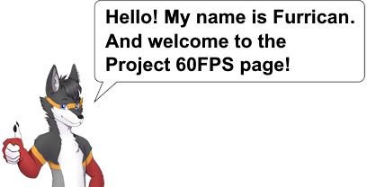
Context
How to make the game run at 60fps?
Well... the answer is actually simple!
In source code, all you have to do is put the FRAME_SKIP value to 0 in the getFrameTime() method of the MainState file located in the MFLib folder.
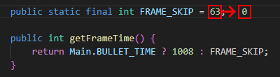
Once this value is changed, recompile the APK, and voila! Problem solved, right?
WRONG! As it turns out, doing so makes the game runs too fast! It runs 4 times faster than it supposed to be.
What is going on?
Before talking about the solution, I would like to explain what is going on in the game.
First of all, we all know that the Android port of Sonic Advance has a problematic frame rate.
The Android port runs at 15fps.
While you might think that the game lags so much, the game is actually designed to run at 15fps!
Here's the proof that the game is intended to run at this frame rate:
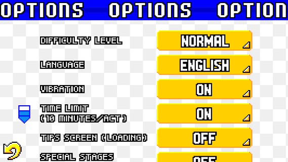
As you can see, this is the Options menu running at 15fps.
Now, what I'm gonna do is to change the value that determines the speed of the options banner.
Located in the TitleState smali file is the optionOffsetX value set to 4.
This value determines the movement of the options banner per frame. When it's equal 4, that means the options banner moves 4 pixels to the left per frame.
For this example, I will put the optionOffsetX value to 1.
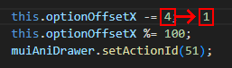
After decompilation, you can see that the options banner on top of the screen now moves 4 times slower.
Or more accurately, it moves 1 pixel to the left per frame.
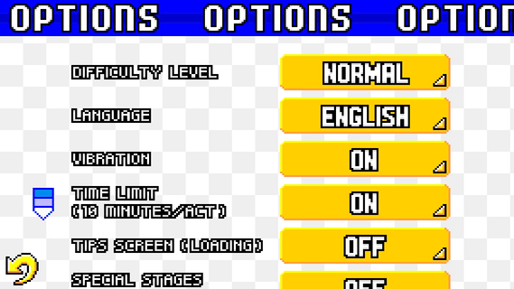
However, if I make the game run at 60fps, here is how the options banner behaves:
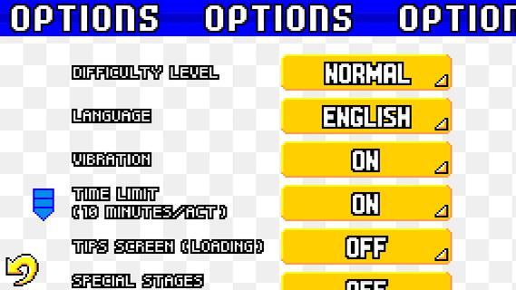
As you can see now is that the options banner now moves at its intended speed, but in a smoother frame rate!
The options banner still moves 1 pixel to the left per frame, but because now the game runs at 60fps, it looks like I made the options banner moves smoother!
Alright. We have an example of how to fix an animation when giving the game a different frame rate.
Now, the question that is actually the right one to ask is this: How to make the game run at 60fps and at the right speed?
Well, since the game is intentionally running at 15fps, we have to change all the values regarding speed, physics, gravity, time and animation frames by dividing or multiplying all those values by 4.
In this way, the game will run 4 times slower at 15fps, but it will run at normal speed at 60fps!
Slowdows during higher frame rates
However, a new problem has been discovered after reprogramming old Android games to run smoothly while keeping the intended speed.
After experimenting with higher frame rate gameplay, we discoved that slowdowns occur when playing at higher frame rates.
Even some of the most performant mobile devices cannot mitigate slowdowns easily.
As it turns out, one key factor of the slowdown to occur are the graphics.
You see, older mobile games lack modern hardware optimizations and are not compiled with modern multi-threaded rendering in mind.
The CPU gets overwhelmed trying to draw millions of pixels on screen frame by frame based on your screen resolution, even though the game canvas only needs a small pixel resolution.
Because of this, rendering so many frames so many times than the intended frame rate may cause the device to run at its maximum capacity.
This also may cause the device to quickly heat up, trigerring thermal throttling and quick battery draining.
The underlying physics and gameplay loop require 60 internal computing cycles per second to advance time normally.
But because of the software rendering issue, the CPU can still only calculate approximately 15 updates per second.
If you force the display output to a smooth 60fps but limit the execution speed, the game engine spaces out those 15 frames over a full 60-frame timeline.
The game looks incredibly smooth because there is no stuttering, but everything moves in slow motion.
The time literally slows down by a huge percentage because the game takes nearly 4 seconds of real time to calculate one second of in-game time.
Thankfully, this problem can be mitigated by implemented a graphics API like OpenGL ES or Android Vulkan.
In this way, the GPU takes care of drawing the graphics while the CPU only takes care of the rest of the game functions.
OpenGL ES is the most recommended API, since it is compatible with many, if not all Android devices.
Gdpro's mod
On August 15th 2026, I have received a message from a Telegram user named Gdpro (not to be confused with GdGohan).
He sent me the source code of Sonic Advance with his modifications in it.
After installing the application from this .swb file, I realized that the game runs at 60fps while maintaining its normal speed (for the most part).
I was so amazed by this revelation!
Of course, his result wasn't perfect, so I told him about the many flaws and leftovers that I encountered.
Once of which was that the game ran slower when playing on higher screen resolution.
Therefore, a graphics API was necessary to maintain a smoother frame rate.
On September 2026, Gdpro has implemented GPU rendering to prevent the CPU from being overwhelmed by rendering the graphics.
He used the OpenGL ES 2.0 graphics API to get rid of the slowdowns.
Additionally, Gdpro also added delta time for the logic.
The delta time is used to make motion frame rate independent without making animations moving even faster when bypassing the initial frame rate.
To test the frame rate improvement, I was running the game using BlueStacks at the highest screen resolution available.
At first, the game ran at around 40fps.
But after some tweaking, Gdpro managed to make it run at 60fps!
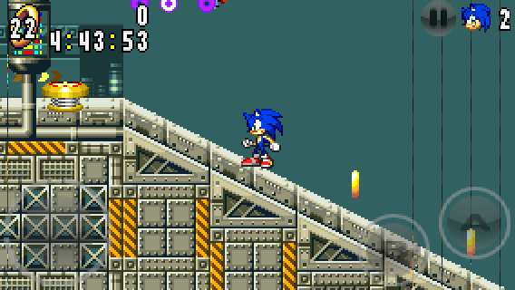
Tile gaps on the right side of the screen
Additionally, an oversight known as tile gaps were present using the graphics API.
On October 2026, Gdpro has recently fixed this oversight as well!
You can find his latest build and source code of his work via the link down-below.
Remaining leftovers
Introduction
This section is where you can find the remaining leftovers (glitches, oversights and other flaws) caused during the transition to the 60fps recompilation and the graphics API implementation.
This section may change over time based on Gdpro's progression.
Once all the leftovers are done, the final result will achieve the ultimate goal of this project and make it a definitive major update of Sonic Advance Mobirev!
First opening sequence
DESCRIPTION:
Let's start the game first with the opening.
As you can see, the green background has some cuts at the bottom of the screen.
The reason may has to do with the .json file not adding repeating sets of background tiles in time for such at a smoother animation.
PRIORITY: Medium
POSSIBLE SOLUTION:
The solution could be to change the opening.json file in order to add more background tiles below the ones that appears from the bootom of the screen.
Magnetic barrier
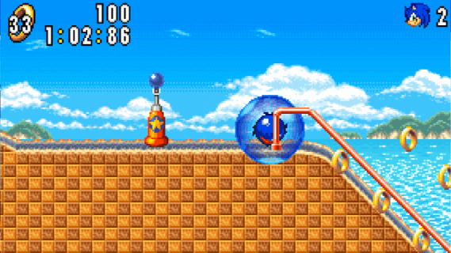
DESCRIPTION:
The magnetic barrier has an oversight.
While moving very fast, the rings don't reach the character equipping it.
Instead, they follow the character until you slow down.
PRIORITY: Medium
POSSIBLE SOLUTION:
It seems like the rings target trajectory hasn't been calculated correctly.
Looking at the gameplay, the target trajectory is located to the horizontal center of the screen, instead of the character position.
Slightly lower gravity
DESCRIPTION:
Due to the transition to 60fps, the character gravity doesn't match the one from the original 15fps.
While the normal jumping gravity has been fixed, other jump heights related to the springs, bars, ramps and trampolines are slightly higher than usual.
Here are comparisons between the original 15fps (left) and new 60fps (right) gameplay:
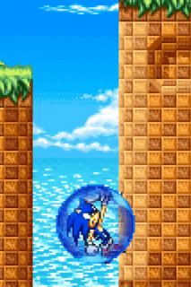
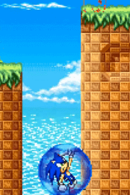
Horizontal bars
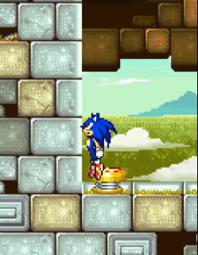
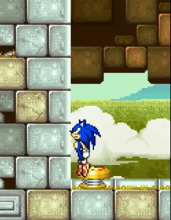
Yellow springs
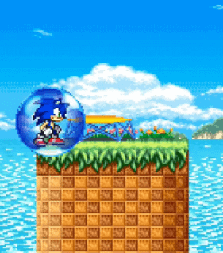
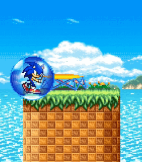
Trampolines (jumping 4 times)
PRIORITY: High
POSSIBLE SOLUTION:
The character gravity is a bit too low, considering the lower gravity occuring on all launching inertias.
The solution is to adjust the character gravity in a way so it will match the one from the original 15fps.
Horizontal bars movement
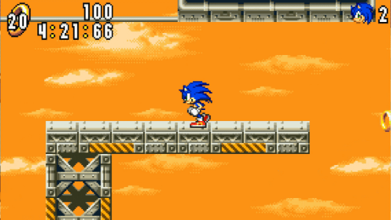
DESCRIPTION:
In Secret Base Zone Act 2, Angel Island Zone Act 2 and Egg Rocket Zone, you can find horizontal bars to hang and move on.
However, due to the transition to 60fps, the character movement speed when hanging on those bars is way too fast.
PRIORITY: Very high
POSSIBLE SOLUTION:
The simple solution is to reduce the character movement speed, presumably by 25%.
Oct unmovable shots
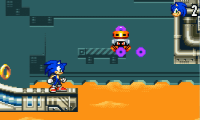
DESCRIPTION:
In Egg Rocket Zone and Cosmic Angel Zone, you can find badniks named Octs.
They move left and right and occasionally shoot purple beams that descend.
However, due to the transition to 60fps, the beams don't descend.
PRIORITY: Very high
POSSIBLE SOLUTION:
The simple solution is to set the purple beam descend speed correctly.
Overduplicated animated objects
DESCRIPTION:
Because of the 60fps transition, duplicated objects that animates are 4 times more duplicated than usual.
To give you an exalmple, here is the first Special Stage transition.
Notice that there are way more white vertical lines moving on screen.
Compare this to the original 15fps.
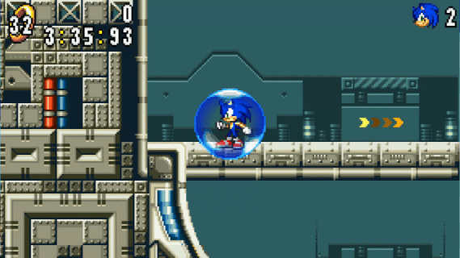
Another example is the gear parts scattering when reaching a section of the rocket during Egg Rocket Zone.
PRIORITY: Medium
POSSIBLE SOLUTION:
The simple solution is to set the animated object duplication every 4 frames instead of 1, since 60 devided by 15 equals 4.
Gameplay canvas gaps
DESCRIPTION:
When entering a menu or starting the game from the main menu, the gameplay canvas shows up and hide the title screen.
However, because of the new graphics API, this canvas may not take the entire screen width, resulting in tiny gaps at the edge of each side of the screen.
If you have seen previous gameplay footages above, you may notice the edges having gaps of the left and right side of the canvas.
PRIORITY: High
POSSIBLE SOLUTION:
The solution could be to set the graphics API so each edge takes care of those gaps.